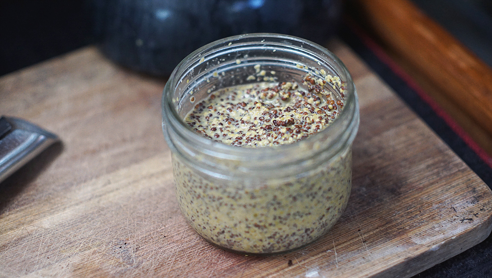
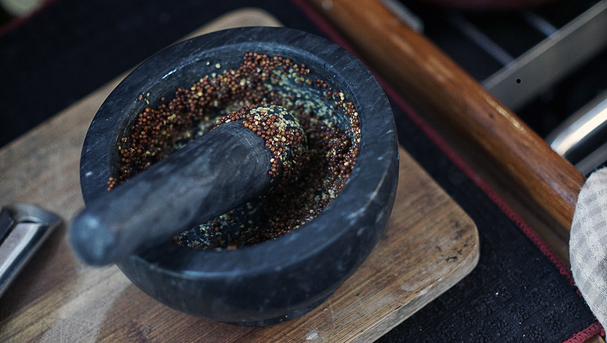

mustard from seed
1 quarter pint (150ml) — 20 minutes
Recipe location: Majuro, Marshall Islands.
We always try our hardest to buy as few packaged foods as we can, and if we do buy pre-made goods we aim for glass, this too through isn't always possible.
We ran out of mustard the other day, and couldn't find any at the store that wasn't packaged in plastic. We decided then that it was better to make our own. It requires few ingredients, little time to prepare (25min for prep, few days for soaking), and is inexpensive.
First, you need some mustard seeds. You can choose between yellow, brown and black seeds, the color affects the 'heat' of the mustard. A dark seed imparts more flavour than the lighter variety, and is what we used in this recipe. The seeds are then soaked in a mixture of water and apple cider vinegar, although you can also use beer and white wine as a base. The water should be room temperature or cold, because using hot liquids denatures the enzymes that create the 'heat' in mustard.
We don't have tools onboard that require electricity, so to grind and crush seeds and herbs we use a heavy ceramic mortar and pestle.
After the mustard is ground, it is stored in a glass jar at room temperature. Because of its antibacterial properties, mustard does not require refrigeration.

The best thing about making it yourself is that you can vary the quantities and base ingredients according to your personal preferences. If you don't like having a strong vinegar taste, you can lessen the amount of apple cider vinegar and add more water instead. You can also add spices and sweeteners. For traditional 'yellow mustard', all you need to do is add turmeric (for color) and a sweetener.
 mustard seeds60 g
mustard seeds60 g apple cider vinegar45 ml
apple cider vinegar45 ml water20 ml
water20 ml
mustard
- Soak 60 g (60ml) of mustard seeds in a mixture of 45ml (3 tbsp) of apple cider vinegar and 20ml of water.
- Let soak for a few days, or until seeds have expanded 3 times their size (from 3 to 7 days). If the seeds have soaked up all of the liquids, add more water.
- Drain the seeds from the liquids. Reserve liquids for later.
- If you've got a blender or food processor, purée the seeds until smooth. Otherwise, add a small quantity of seeds in your mortar and grind them down with your pestle. Repeat until the seeds are crushed and puréed - the mixture doesn't need to be perfectly smooth.
- Add the reserved liquid from before, bit by bit, until you get a nice smooth consistency.
- Store into a glass jar at room temperature, and enjoy!